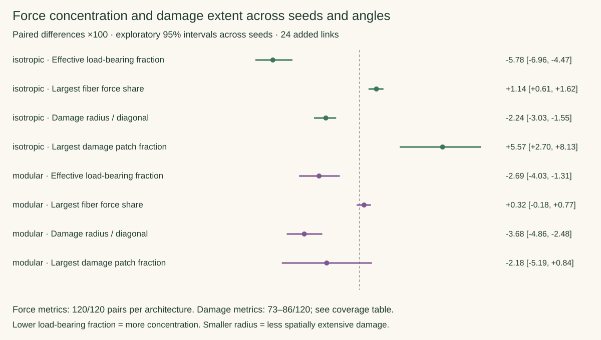

10 seeds × 12 loading angles × 2 architectures × 2 placement patterns = 480 configurations, each solved at 480 and 960 load steps. Added count 24; unchanged dimensionless mechanics.

| Architecture / metric | Clustered − distributed (×100) | 95% seed-bootstrap interval | Resolved pairs | Seeds ≥6 angles | Positive / negative angle pairs |
|---|---|---|---|---|---|
| isotropic · Effective load-bearing fiber fraction | -5.78 | -6.96 to -4.47 | 120/120 | 10/10 | 7 / 113 |
| isotropic · Largest single-fiber force share | +1.14 | +0.61 to +1.62 | 120/120 | 10/10 | 99 / 21 |
| isotropic · Damage radius / domain diagonal | -2.24 | -3.03 to -1.55 | 86/120 | 10/10 | 23 / 59 |
| isotropic · Largest connected damage patch fraction | +5.57 | +2.70 to +8.13 | 81/120 | 8/10 | 53 / 24 |
| modular · Effective load-bearing fiber fraction | -2.69 | -4.03 to -1.31 | 120/120 | 10/10 | 27 / 93 |
| modular · Largest single-fiber force share | +0.32 | -0.18 to +0.77 | 120/120 | 10/10 | 74 / 46 |
| modular · Damage radius / domain diagonal | -3.68 | -4.86 to -2.48 | 81/120 | 7/10 | 13 / 68 |
| modular · Largest connected damage patch fraction | -2.18 | -5.19 to +0.84 | 73/120 | 7/10 | 30 / 43 |
Differences are clustered minus distributed. For fraction metrics, ×100 gives percentage-point differences; for damage radius it gives percentage points of the unit-square diagonal. Positive/negative counts include all resolved angle pairs; the mean/interval use seeds with at least six resolved angles. Ties account for remaining pairs.
Interpretation: Clustered links concentrate early fiber forces in both architectures. They also tend to localize damage spatially at a matched damage level. The modular largest-fiber share and damage-patch contrasts remain uncertain. Neither force concentration nor spatial damage extent alone determines work capacity.
Limits: Damage estimates exclude resolution-sensitive and poorly matched damage stages; complete-case selection may bias them. Intervals are exploratory, conditional on resolved cases, and unadjusted for four correlated metrics. Angles within each seed are grouped. These results cover one connector count and a small network model; they are not calibrated tissue-aging predictions.
Definitions and analysis methods · All contrasts: CSV · Fine/coarse results and flags · Summary data · Download vector plot · Watch the four-case replay